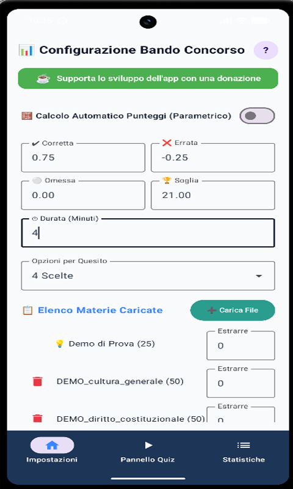
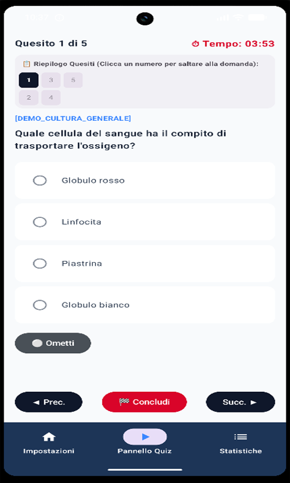
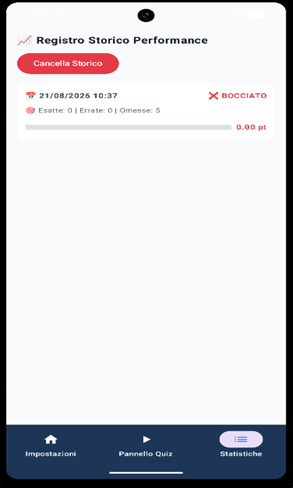
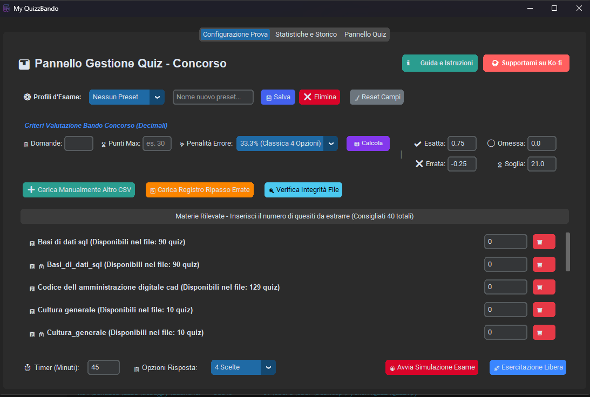
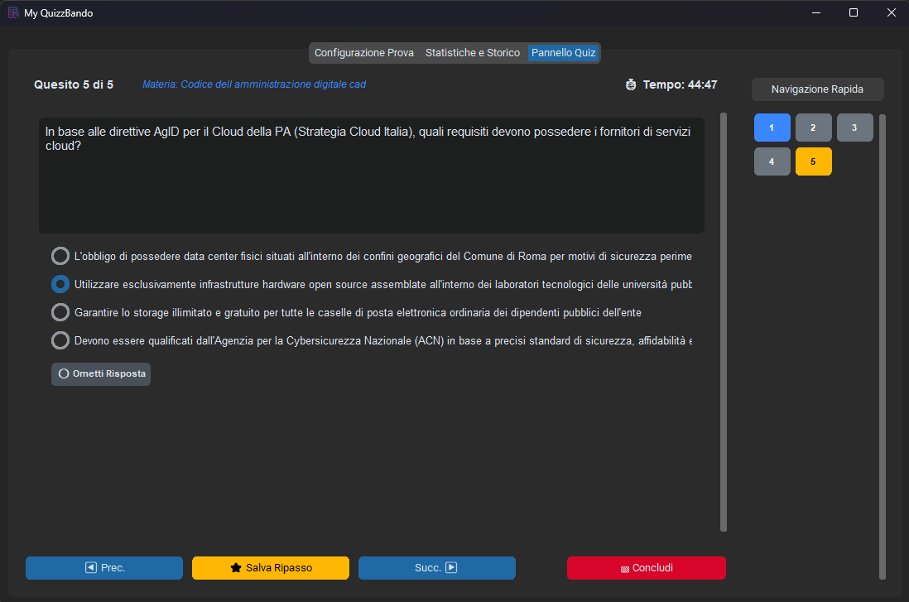
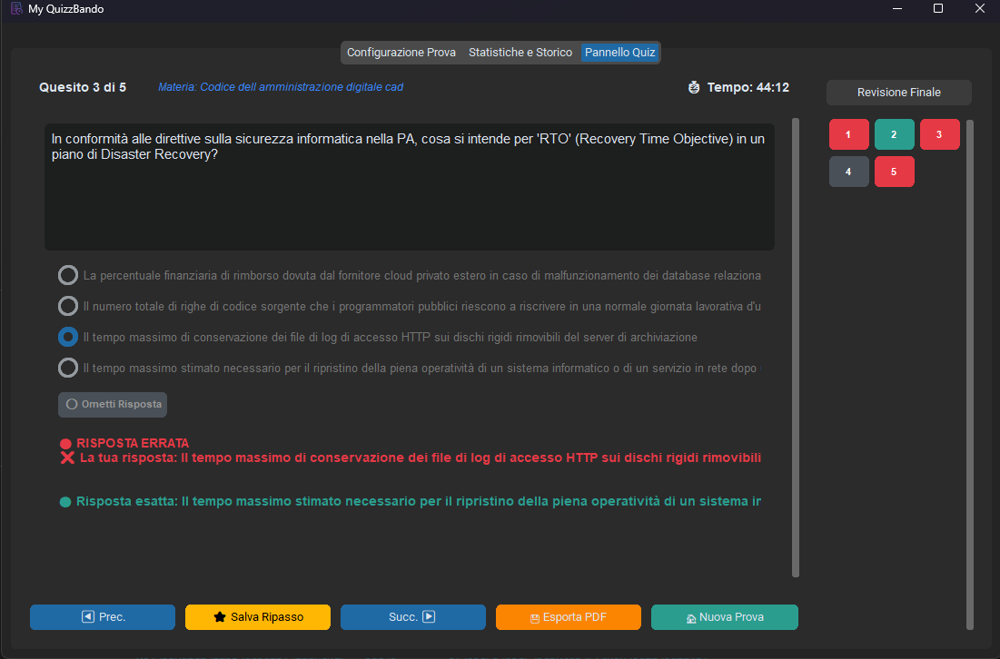
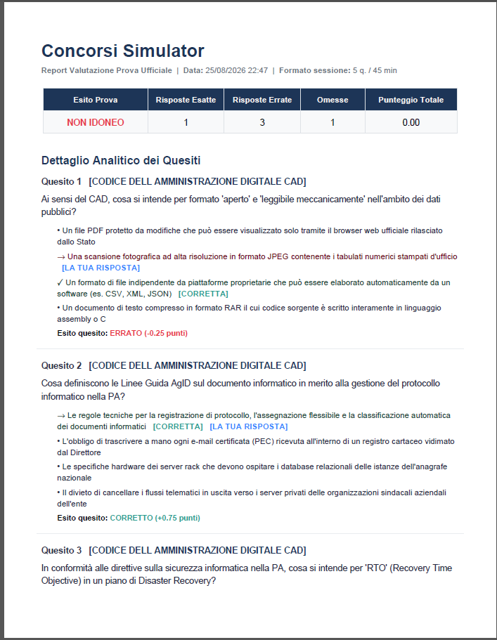

MyQuizzBando (Simulatore Quiz Concorsi)
L'ecosistema definitivo per superare i concorsi pubblici su Android e PC Windows
L'ecosistema definitivo per superare i concorsi pubblici su Android e PC Windows
Un database unico di domande e risposte create per coprire tutte le materie principali dei bandi ufficiali.
L'applicazione è completamente gratuita, indipendente e senza alcuna pubblicità. Se ti è stata utile per studiare, puoi offrirmi un caffè per sostenere i costi di sviluppo!
☕ Offrimi un caffè su Ko-fiScarica questi pacchetti di domande gratuiti e importali direttamente dentro MyQuizzBando con il tasto di caricamento file:
Uno sguardo ravvicinato all'interfaccia grafica su smartphone e computer






